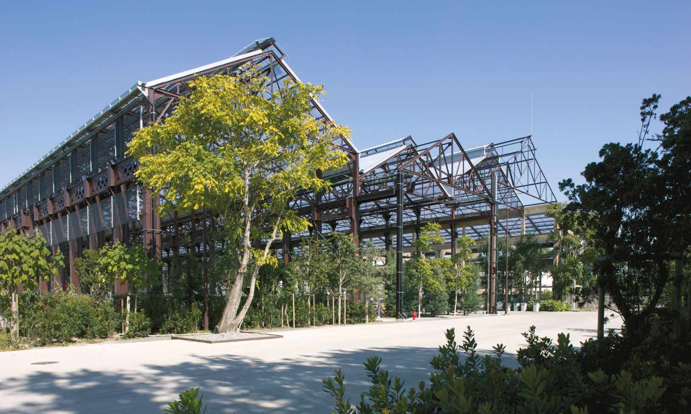

Survolez l'image et agrandissez/réduisez la vue à l'aide de la molette.
Budget: 4 848 300 € HT
Surface SHON: 15 000 m²
Date début: 2005
Date fin: 2007
Maîtrise d'ouvrage: Nantes Métropole
Co-traitant(s): Bureau des paysages
Description:
Situées dans la partie ouest de l’île, les quatre nefs de la Loire sont des halles industrielles
réalisées entre 1903 et 1946 qui servaient de chaudronnerie pour les chantiers navals. Le projet
de réhabilitation représente une métaphore du projet urbain de l’île de Nantes tout entière.
Il s’agit de créer un grand espace libre, ouvert et couvert, traversé par deux rues publiques
orthogonales sous le parapluie de la toiture translucide.
Complètement vidées, désossées et
déplombées, les nefs offrent trois grands espaces capacitaires pour des programmes à venir.
Le premier accueille l’Atelier et la Galerie de la Machine (Nicole Condordet et Patrick Bouchain
architectes) ainsi qu’un éléphant-machine géant réalisé par François Delarozière et Pierre Oréfice :
des modules préfabriqués et une ossature en bois s’insèrent dans le volume des nefs tout
en restant indépendants de sa structure.
Le deuxième va être occupé par la Fabrique (Tetrarc
architectes), un pôle de création culturelle dédié aux arts émergents (musiques actuelles, arts
numériques et autres pratiques artistiques) et le troisième est en cours d’affectation. Des
palmiers et des bambous sont plantés dans les anciens fossés techniques et arrosés par un
système de récupération des eaux pluviales. Le volume ainsi dégagé génère une rencontre
entre un espace public et des lieux d’expérimentation programmatiques et artistiques.
{kind=link}
{kind=link}
{kind=link}
{kind=link}